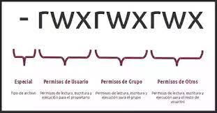

Servicio orientado a conexion, se creo en las decada de los 70, utiliza los puerto 20 y 21 por defecto sobre tcp, el 20 para datos y 21 para control. nos permite realizar intercambio de archivos de forma independiente de los SO, da igual el SO, estariamos trabajando con una arquitectura cliente servidor y no tiene segurirdad pero podemos añadirla con certiicados
Ejemplos de servidore ftp: proftp,vsftp y filezilla ejemplos de clientes: navegador, cliente modo texto(ftp), cliente grafico(filezilla, winstp, cyberduck).
apt-get install proftpd
proftpd -v (version que tenemos de proftpd)
service proftpd status (estado del servidor)
r: permite acceder a un archivo o listar un directorio
w: modificar y borrar
x: ejecutar
El comando para visualizar los permisos es ls que nos permite listar el contenido del directorio actual. modificadores de ls : ls -l(ver detallada la info), ls -a(incluir los ocultos), ls -R (aplicar de forma recursiva el comando).
Chmod: modifica los permisos
Chown: chown nombreUsuario nombreFichero.txt(lo que hace es asignar como propietario el indicado al fichero que hemos indicado).
-Anónimos: Utilizan como nombre de usuario anonymous, acceden con permisos limitados, contraseña ej: email, si permitimos en nuestro servidor este tipo de usuraios hay que tener en cuenta la brecha de seguridad. Se utilizan para que cualquiera pueda acceder a los ficheros de forma publica.
-Autenticados o del sistema: Creados en el propio SO y tiene un nombre de usuario y contraseña propios.
-Virtuales: Usuarios creados especificamente para el servicio ftp, tipo de usuario que crea una menor brecha de seguridad la validacion del par nombre de usuario contraseña puede realizarse mediante fichero, bases de datos o mediante servicios de directorios ej: ldap
-Binarios: Su contenido es binario.
-Texto: Caracteres legibles por humanos, activar el modo adecuado antes de trabajar con ficheros.
binary y ascii, nos indican con que tipo de ficheros vamos a trabajar.
-Activo: Modo por defecto, el servidor abre los puertos 20 para datos y 21 para control el cliente hace o mismo pero en puertos superirores al 1024 si vamos a subir un fichero al servidor la conexion la inicia el cliente, mientras si vamos a descargar un fichero la conexion la inicia el servidor.
-Pasivo: Es el cliente el que siempre inicia las conexiones, tanto la de datos como la de control nos va a evitar problemas si existen cortafuegos intermedios
-22x: Conexión correcta.
-120: El servidor lee en xxx minutos.
-331: Nombre de usuario correcto, necesita una contraseña.
-550: Solicitud de información no aceptada. Las filas no están disponibles (ej.: filas incorrectas).
Se utiliza la ! para diferenciar entre los directorios remotos y los locales formato url ftp --> ftp://< user>:< pass>@:< server>:< port>
-ServerName: Cambia el nombre del servidor.
-ServerType: Es el modo en el que se configura el servidor, como servicio o como programa.
-DefaultRoot: Establece la rura de la carpeta inicial de un usuario, con la birgulilla podemos enjaular al usuario para que no recorra el sistema de ficheros.
-MaxClients: Numero maximo de clientes concectados a nuestro servidor.
-UserAlias: Establece un alias a un usuario del sistema.